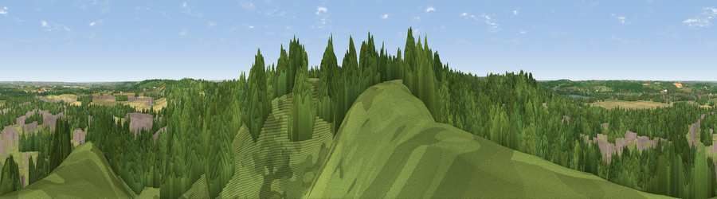

Viewpoint near Lidlington
#21197 in England · top 19% of its area beats it · near LidlingtonThe view, rendered

A 360° render of this exact spot computed from the terrain model, tree cover and land cover — summer colours, afternoon light, calibrated against photographs of famous viewpoints. Real trees, hedges and buildings will differ in detail.
The panorama
Grey silhouette: terrain skyline in each direction (720 bearings, Earth curvature and refraction included). Dashed green: skyline with trees (+15 m) and buildings (+8 m) as obstacles. Blue strip: how far the ground is visible on each bearing.
Where the view opens
Wedge length = distance to the farthest visible ground on that bearing (vegetation-aware). Rings at 10, 25 and 50 km.
What fills the view
59% woodland · 27% grassland · 7% cropland · 7% built-up ·
Angular shares of the visible panorama (visual magnitude), not map area. Landscape diversity 0.46 (0–1 Shannon).
Key numbers
More beautiful places nearby
The staircase of upgrades: each row has a higher view potential than everything closer. Driving times are estimates from straight-line distance, calibrated against real road routing — check an actual route before setting out.
| Place | Direction | Drive | Score |
|---|---|---|---|
| Viewpoint near Lidlington | W · 1 km | ~3 min | 55.0 |
| Viewpoint near Lidlington | W · 1 km | ~4 min | 56.0 |
| Viewpoint near Bow Brickhill | WSW · 10 km | ~19 min | 57.0 |
| Viewpoint near Sharpenhoe | SE · 11 km | ~21 min | 57.6 |
| Viewpoint near Hexton | SE · 13 km | ~23 min | 64.2 |
| Viewpoint near Hexton | SE · 15 km | ~27 min | 65.4 |
| Viewpoint near Church End | S · 18 km | ~31 min | 65.8 |
| Beacon Hill | SSW · 22 km | ~37 min | 74.1 |
52.03831, -0.53878 · source: screening · position refined by local search. Computed location — check access rights before visiting.